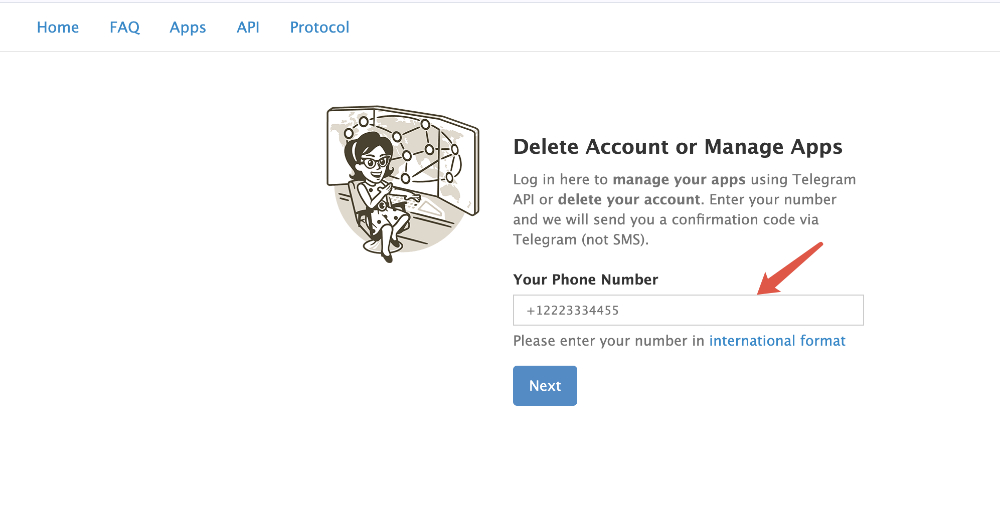
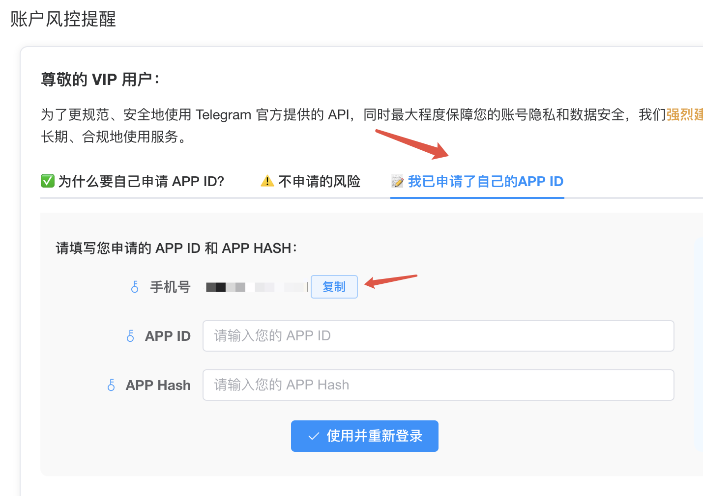
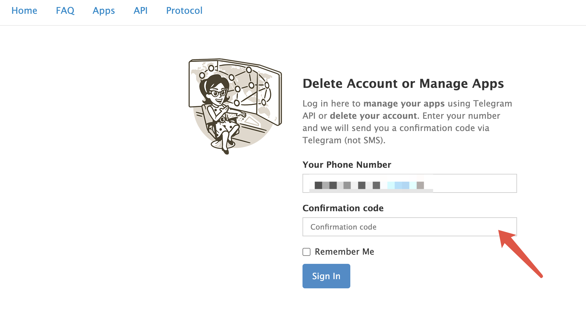
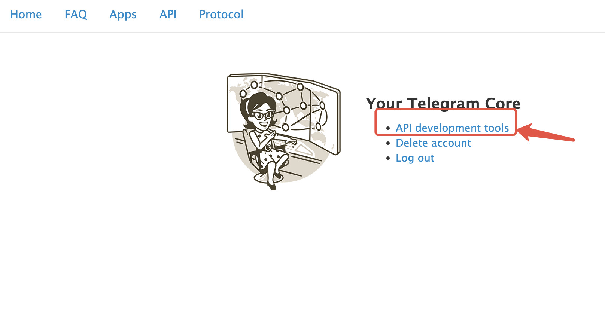
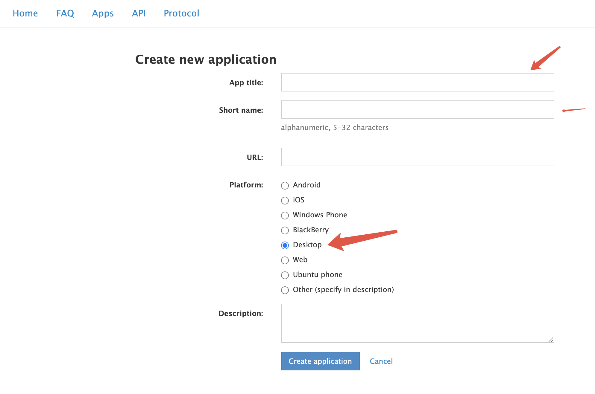
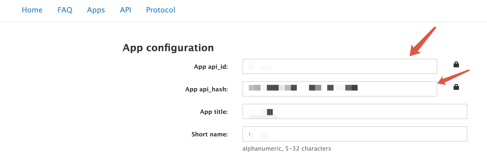
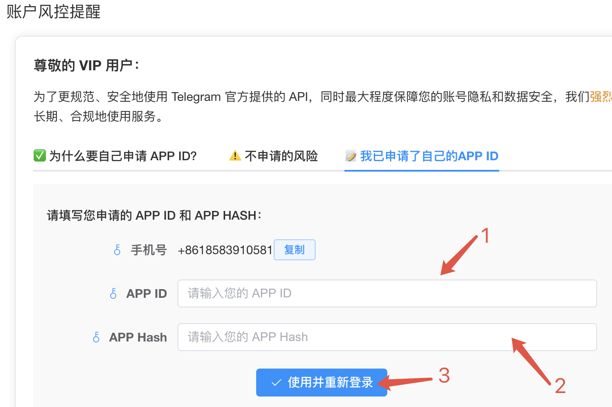

如何申请Telegram APP ID和API Hash¶
在使用TG-FF时，您可能会发现需要填写Telegram的APP ID和API Hash。这些是什么？简单来说，它们是Telegram官方为开发者提供的访问凭证，使用自己的凭证可以获得更稳定、更安全的使用体验。
本教程将一步步指导您如何申请自己的Telegram API凭证，整个过程只需5分钟，非常简单！
申请步骤概览¶
详细申请流程¶
第一步：访问Telegram开发者网站¶
首先，打开Telegram官方API开发者网站：https://my.telegram.org/auth
您会看到如下登录界面：

在输入框中填写您的Telegram账号绑定的手机号码。请注意：手机号必须以"+"开头，并包含国家/地区代码（中国大陆为+86）。
您也可以直接从TG-FF软件中复制您的手机号格式：

第二步：接收验证码¶
填写手机号后，点击蓝色的"NEXT"按钮，Telegram会向您的账号发送一个验证码：

重要提示：验证码会发送到您的Telegram客户端中，而不是通过短信发送到手机号。您可以在电脑或手机上的Telegram应用中查看这条验证码消息。
第三步：进入开发者工具页面¶
收到验证码后，将其输入验证框，然后点击"Sign In"按钮登录。登录成功后，您将看到开发者工具选择页面，请点击"API development tools"选项：

第四步：创建应用¶
现在您需要填写应用信息，这里只需要关注三个重要字段：
- App title：应用名称，可以填写"TG-FF"或任何您喜欢的名称
- Short name：应用简称，可以填写"tgff"或类似简短名称
- Platform：平台选择，请务必选择"Desktop"
填写完成后，点击"Create application"按钮创建应用：

第五步：获取API凭证¶
成功创建应用后，系统会自动生成您的API凭证。在页面中，您可以看到两个重要信息：
- App api_id：一串数字，这就是您的APP ID
- App api_hash：一串字母和数字的组合，这是您的API Hash
请将这两项信息复制并填写到TG-FF软件中的相应位置：


常见问题与解决方案¶
在申请过程中，您可能会遇到一些问题。以下是常见的几种情况及其解决方法：
1. ❌ 未设置用户名（username）¶
Telegram 要求您的账号设置了唯一的用户名，才能申请 API。
解决方法： - 打开 Telegram App - 进入设置（Settings）> 用户名（Username） - 设置一个唯一的用户名（不是昵称）
2. ❌ 未绑定手机号或使用了匿名账户¶
不能使用未验证手机号或临时账号登录 my.telegram.org。
解决方法： - 确保您的 Telegram 是手机号注册的真实账号 - 能正常登录手机端 Telegram 客户端
3. ❌ 使用代理或 IP 被限制¶
如果您用了代理、VPN，或者您所在地的 IP 段被限制，可能导致登录后访问页面功能异常。
解决方法： - 更换网络或 VPN 节点（尝试新加坡、德国、英国等） - 使用无代理的环境或直接用海外 VPS 尝试
4. ❌ 填写内容不规范（title、short name）¶
如果 App 名称包含非法字符，或 short name 重复，也可能导致错误。
解决方法： - App title: 不能有特殊符号 - Short name: 必须唯一，不能重复，建议加随机后缀，如 myapp202505 - Platform: 选 Android/iOS/Web/Windows 皆可 - URL: 随便填一个合法格式（如 https://example.com）
5. ❌ 表单提交前未完成页面加载¶
如果您在页面还未完全加载前点击提交，也可能返回"error"。
解决方法： - 重新刷新页面，等待完全加载后再填写 - 尽量用 Chrome / Firefox 桌面浏览器操作
使用说明¶
为什么要申请自己的API凭证？¶
您可能会问："为什么要自己申请这些凭证？"这里有几个重要原因：
使用自己的API凭证的好处¶
✅ 更快的连接速度：Telegram会为您分配专用的API通道，访问速度更快，连接更稳定。
✅ 更高的隐私保障：您使用的是自己申请的凭证，不与他人共享，数据安全性更高。
✅ 避免限流问题：共享的API凭证可能因多人同时使用而触发Telegram的限制，导致验证码无法接收或登录失败。
✅ 灵活拓展：拥有自己的API凭证，您可以在未来将其用于其他Telegram相关应用。
不申请个人API凭证的风险¶
⚠️ 登录不稳定：共享API凭证可能导致Telegram将您的登录识别为异常行为。
⚠️ 账号风险：Telegram对共享API凭证的检测越来越严格，可能导致账号被临时限制。
⚠️ 速度受限：在共享凭证下，您可能会遇到API请求频率限制，导致操作延迟。
⚠️ 安全隐患：使用他人的API凭证等同于通过他人的名义访问Telegram，存在潜在安全风险。
小贴士¶
- API凭证申请成功后，请妥善保存这些信息
- 一个Telegram账号可以创建多个应用，但通常一个就足够了
- 如果您忘记了凭证，可以随时重新访问开发者网站查看
现在，您已经成功申请了自己的Telegram API凭证，可以享受更稳定、更安全的TG-FF使用体验了！